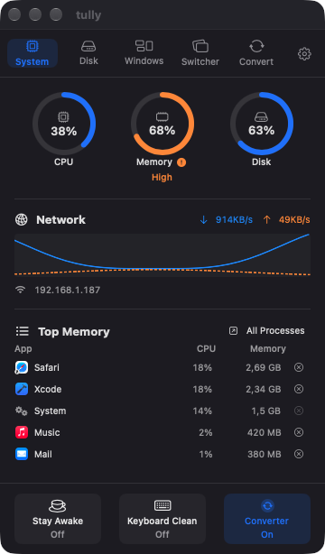
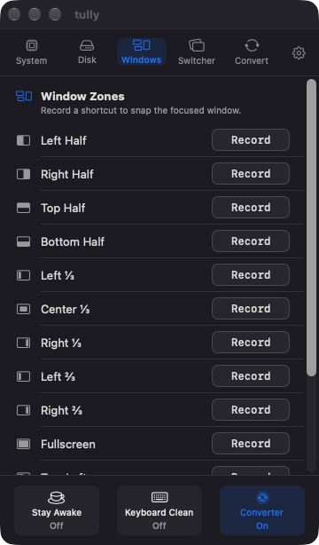
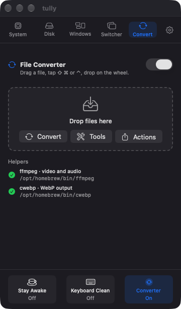
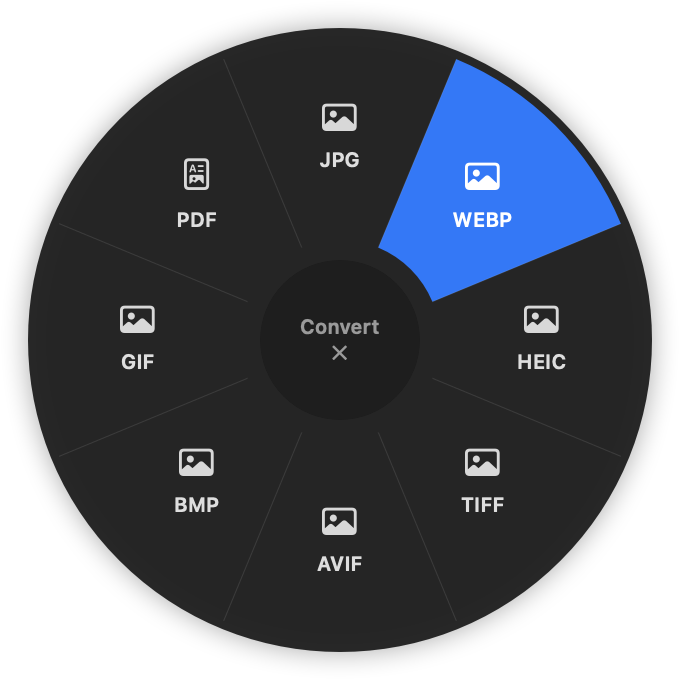
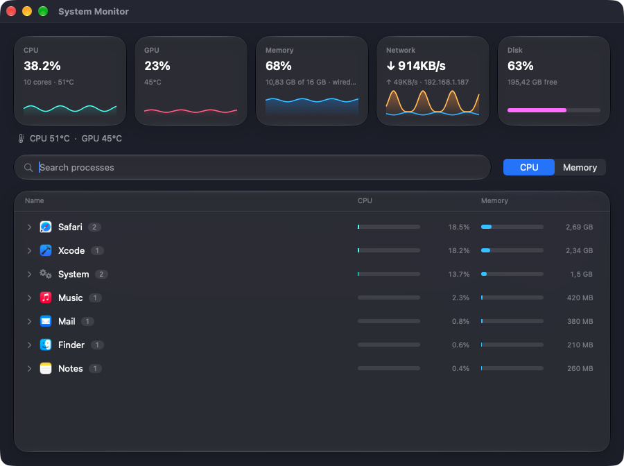
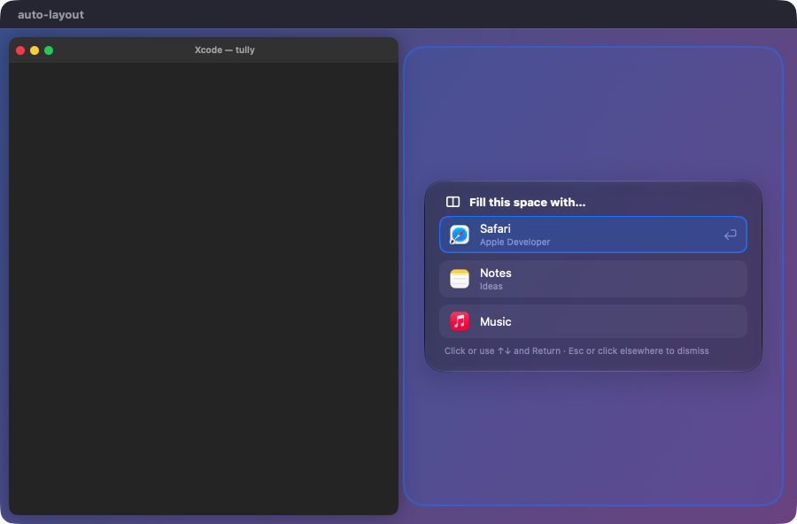
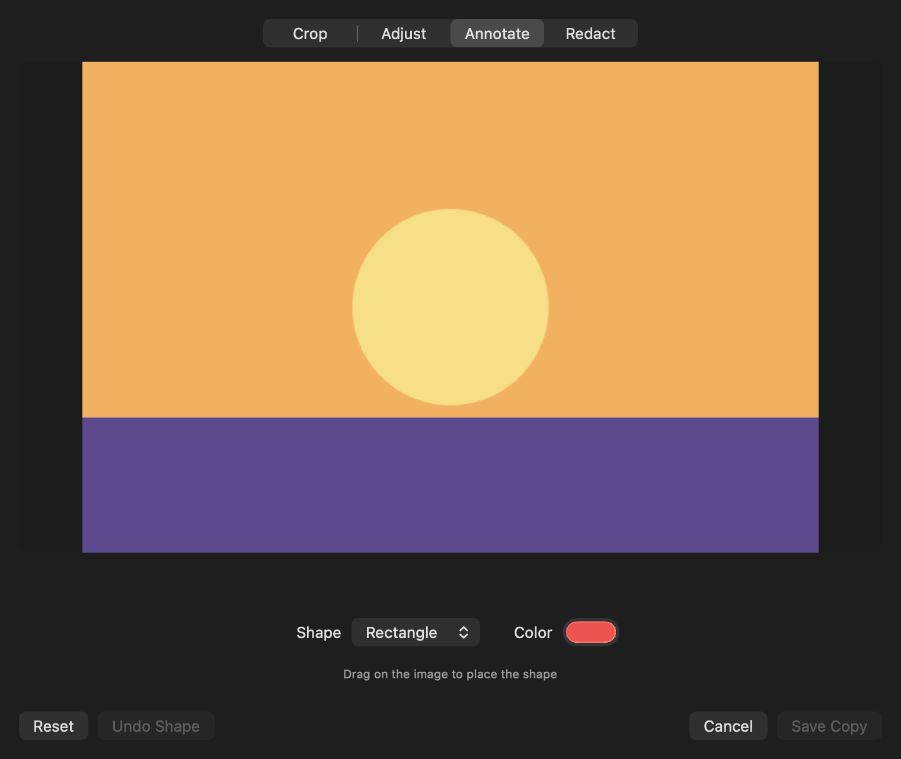
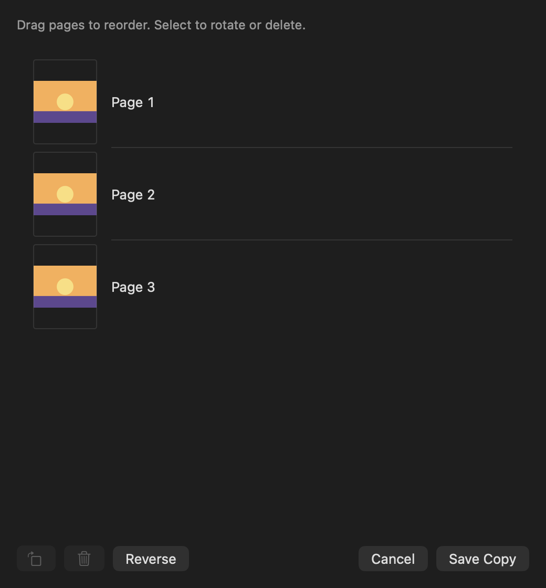
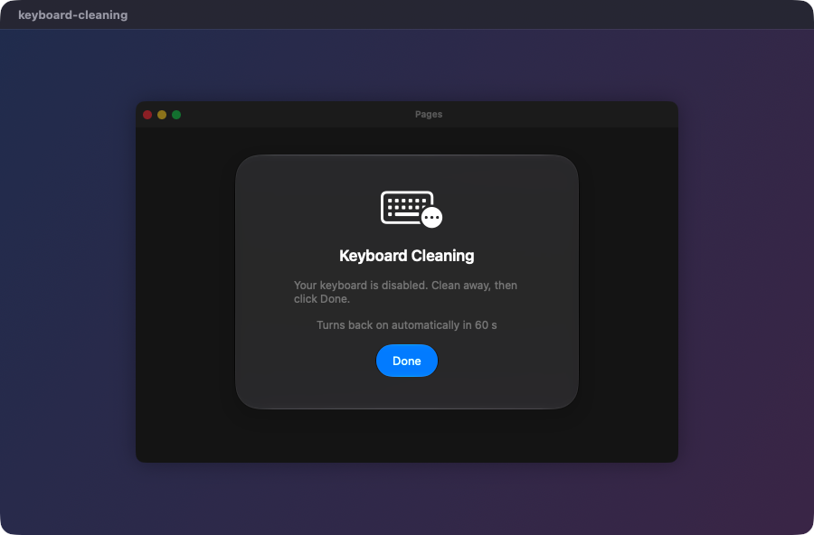
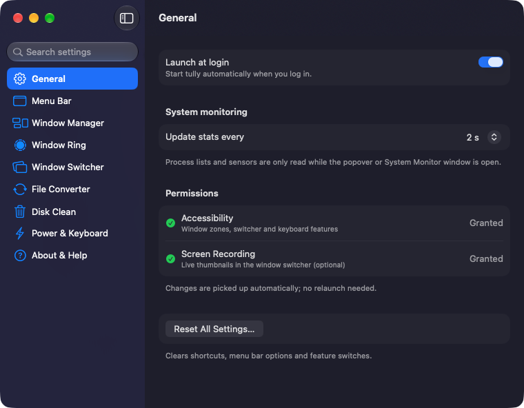

§ 00 — introduction
One tool.
One tool.
Always at hand.
tully lives in your menu bar and does the ten small things you do every day: watch the system, place windows, convert files, clean the disk. Nothing new to learn. It just works the way your Mac already does.
- conversion pairs
- 355
- file tools
- 28
- subscription
- 0 €
- data sent anywhere
- none
↑ hold the keys (or press ⌃⌥ for real), then move the mouse



01 / 06
Drag a file. Tap a key.
Start dragging any file and tap a modifier: a wheel opens under the cursor. Drop on a segment and the result lands next to the original. No window to open, no permissions needed.

Everything else, where you'd expect it.






No App Store. No subscription. No telemetry.
PermissionUsed forWithout it
AccessibilityZones, Window Ring, switcher, Keyboard CleaningThose stay off, the rest works
Screen RecordingLive thumbnails in the switcherApp icons instead
Full Disk AccessDisk Clean in protected folders (optional)Listed as unreadable
NetworkNothing. No calls, no analytics.—
Up and running in a minute.
- 01Download the latest
tully.zipfrom GitHub Releases and move tully to Applications. - 02The app isn't notarized: the first time, right-click → Open.
- 03Look for the ring in the menu bar. Grant Accessibility when you want the window features.
- 04Optional, for video, audio and WebP:
brew install ffmpeg webp